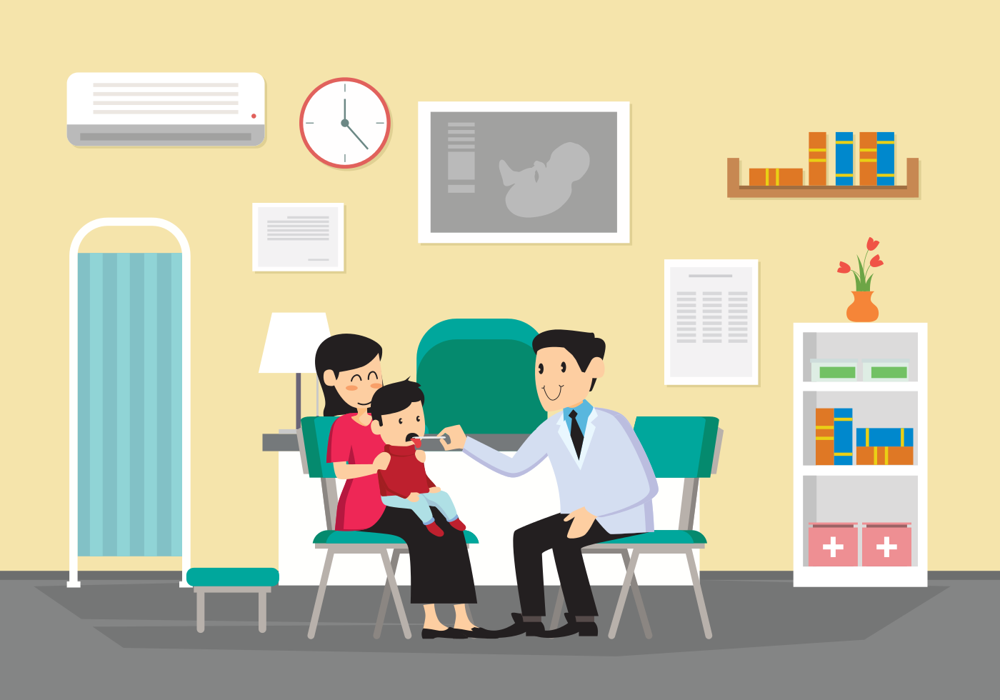

Publicado el 15 de mayo,2019
Siempre nos preocupamos por elegir el mejor seguro de vida, el seguro de nuestro auto o hasta el seguro para el hogar, pero pocas veces nos dammos a la tarea de prevenir accidentes dentro de nuestro propio auto.
En esta ocasión les quiero hablar de los sistemas de viaje seguro con información que me compartió el equipo de Prinsel que son super importantes para nuestros pequeños, ya que en caso de algún siniestro pueden proteger su vida y prevenir un accidente mayor.
El Sistema de Retención Infantil (SRI) que es este autoasiento que ofrece una protección al niño durante el viaje debe ser utilizado desde el día 1 que sale el bebé del hospital y es que a veces nos gana la emoción y como padres primerizos pensamos que nuestros brazos serán el lugar más seguro donde puede estar nuestro bebé pero no es así, los accidentes son inesperados y en caso de que haya alguno podemos apretar demasiado fuerte al bebé y lastimarlo, además si educamos a nuestro hijo para que desde muy chiquito aprenda a viajar de esta forma, será mucho más fácil que aprenda a que debe viajar así, a diferencia de que si se lo queremos enseñar cuando ya sea un poco más grande, tal vez llore o se angustie porque no está acostumbrado y lo vea como una forma de castigo.
El uso del Sstema de Retención Infantil reduce hasta en un 75% las lesiones durante un accidente.
Ahora que ya sabes esto, si estás pensando en comprar un autoasiento de segunda mano, debes pensarlo muy seriamente pues hay varios puntos que debes tomar en cuenta, por ejemplo, en ocasiones los autoasientos los ajustamos al automovil y no los quitamos, imaginemos que ese automóvil sufrió un accidente y afortunadamente ese día no viajaba ningún niño ahí dentro, entonces el autoasiento en cierta forma queda dañado aunque no se vea a simple vista y entonces ya no cumplirá su función al 100%, por otra parte la cuestión de la higiene, por lo que debes poner mucho ojo en esto.
Siempre debes tomarte el tiempo suficiente para saber que el autoasiento ha quedado instalado correctamente
En México la ley solo regula que un niño menor de 12 años no puede ir en el asiento de adelante y debe ir en una silla acorde a su edad y estatura, pero esto es demasiado ambiguo.
Recomendaciones de uso de los autoasientos
Regularmente este viene con una carriola y debe ser de 0 a 12 meses. Este tipo de autoasiento siempre va a ir a contramarcha
Pueden ir viendo a contra marcha o a favor de la marcha, pueden ser a partir de 0 o 6 meses.
Podríamos llamarlo como el auto asiento de los niños grandes, se usa a partir de los 4 años debido a la madurez del cuerpo.
Es como un cojín y se usa a partir de los 8 años.
Tips para viajes seguros
Tomar por donde pasa el cinturón o sistema latch, hacer un movimiento de un lado hacia el otro, de arriba hacia abajo y no se debe mover más de una pulgada. La base del auto asiento debe quedar sujeta al asiento del automóvil.
También es conocido como la prueba de pellizco, una vez que está instalado el pequeño en el autoasiento, con los dedos intento pellizcar el arnés y si no lo logro, está ajustado correctamente.
El diseño de los cinturones de seguridad están hechos para adultos o mayores a 1.45m. de estatura, por lo que es necesario tener un sistema que asegure hombros y caderas al momento de estar sentados y retenga estos puntos.
Hasta que su peso sea de 45 kg., su estatura mayor a 1.45 m. o tenga 12 años de edad, lo que se llegue primero.
No, su uso se hace a pesar de que sean distancias cortas las que recorrerás en el auto, incluso dentro de un estacionamiento, pues no estamos exentos de sufrir un accidente en ningún momento.
Cada autoasiento tiene un límite de peso y estatura, en el manual nos dice hasta cuando lo debemos utilizar.
En el manual del automóvil viene un apartado donde dice qué se hace con un SRI o sillas infantiles y trae información como dónde se coloca el auto asiento, cuál es el sistema de anclaje que usa
Existen auto asientos de diferentes precios pero siempre debemos buscar el que sea mejor y más seguro de acuerdo a las características de nuestro hij@, ya que en ocasiones el precio se incrementa debido al diseño, materiales de fabricación o aditamentos.